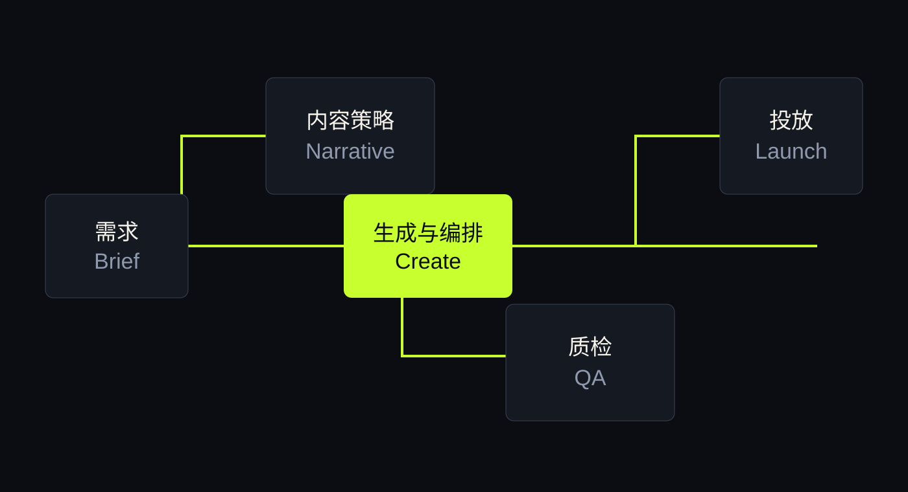
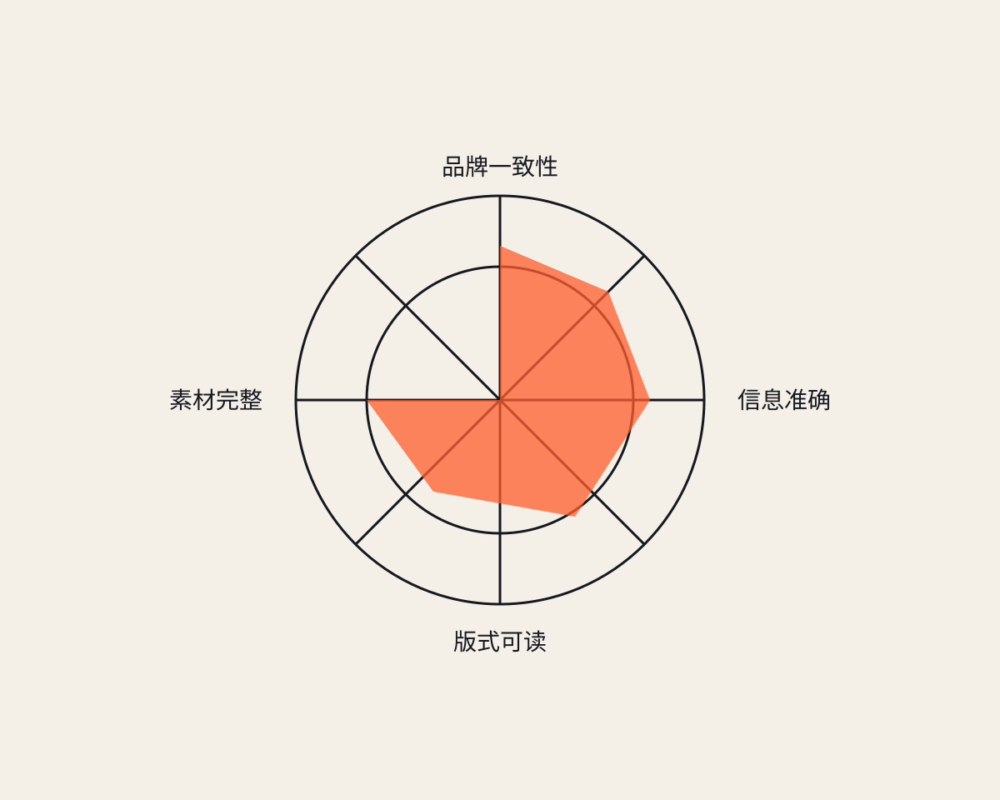

传统串行
01需求文档反复解释
02设计依赖个人经验起稿
03审核只在成稿后介入
04修改重新走完整链路
AI CREATIVE OPERATING MODEL
从“单点出图”转向可规划、可验证、可复用的创意生产系统
THE SHIFT
SECTION 01
需求、策略、设计、审核、投放彼此割裂。AI 只替代了其中一个动作，却没有缩短整个决策回路。
TARGET SCENARIO
将一次基础广告素材迭代，从跨天等待压缩到同一工作时段内完成。
示例目标指标，用于说明工作流设计方法，不代表真实业务数据。
BEFORE / AFTER
SYSTEM MAP
每个节点都有输入、输出和验收条件。Agent 负责执行，人负责设定判断标准。

ROLE DESIGN
提炼目标、受众、信息层级与证据，输出可执行的内容结构。
生成文案、版式、图像方向与变体，遵守品牌和渠道约束。
检查事实、文字、视觉、尺寸和交付格式，只放行合格版本。
EVIDENCE WALL
目标、人群、卖点、禁用项和渠道规格。
为什么采用该结构、配色、图像比例和文案层级。
溢出、错字、品牌一致性、素材缺失和导出结果。
本轮修改了什么，哪些内容被保留或回滚。
CONTROL LOOP
建立不可违反的质量门槛
批量生成并自动筛除明显失败
人只处理高价值判断与例外

OPERATING PRINCIPLE
AI 负责扩大探索空间，
系统负责守住质量边界，
人负责做最终判断。
30-DAY PLAN
选择高频、规则明确、返工成本可观察的素材类型。
沉淀 Brief、布局、品牌、质检和交付规范。
人工流程与 Agent 流程并行，对比耗时和失败类型。
修复高频失败，再复制到相邻素材和渠道。
TAKEAWAY